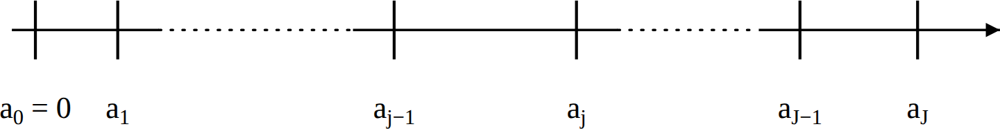
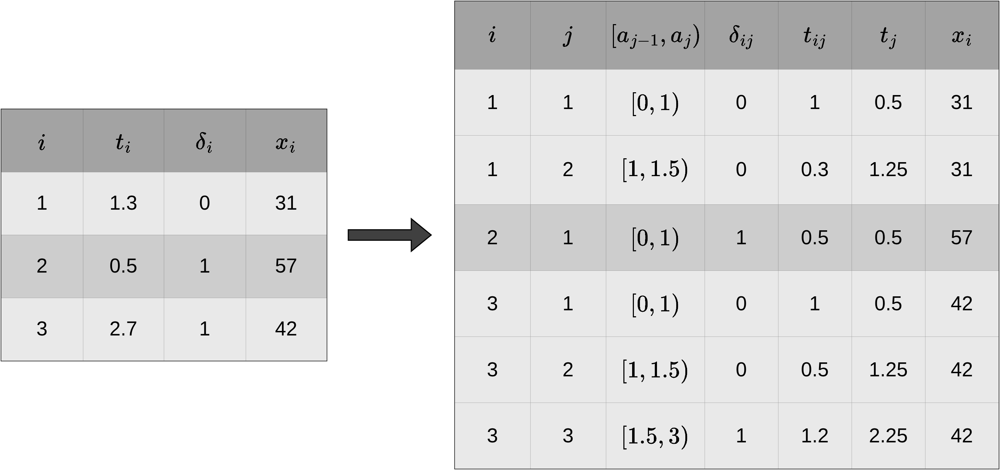
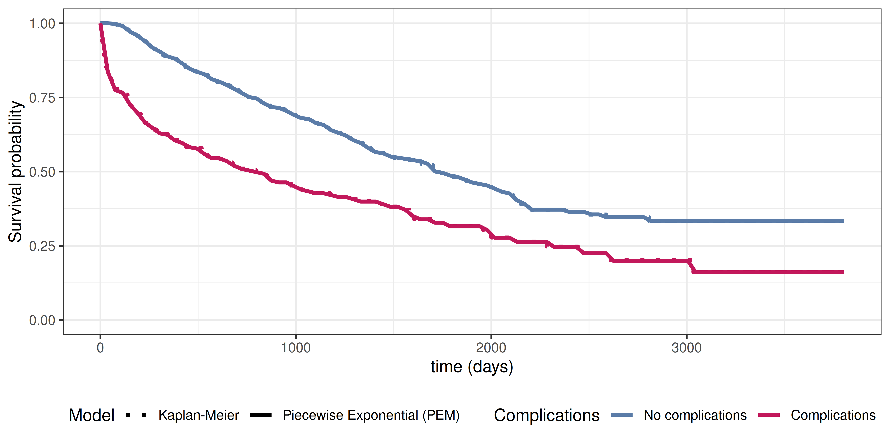

20 Partition-Based Reductions
In contrast to the previously introduced reductions that focus on the estimation of a specific quantity of interest at one or a few time points, partition-based reductions aim to estimate the entire distribution of the event times. The general idea is to partition the time axis into \(J\) disjoint intervals \([a_0,a_1),\ldots,[a_{J-1},a_J)\) and estimate a discrete or continuous hazard rate for each interval. Intervals do not need to be of the same size.
For illustration, consider the partitioning of the follow-up in Figure 20.1. Let \(I_j:=[a_{j-1},a_{j})\) be the \(j\)th interval and let \(J_i\) denote the index of the interval in which the observed time \(t_i\) of subject \(i\) falls, that is \(t_i \in I_{J_i} = [a_{J_i-1},a_{J_i})\).

Formally, define the partitioning of the follow-up times via the set of interval boundary points \(\{a_{j-1}, a_j\}\) for \(j=1,\ldots,J\) as:
\[ \mathcal{A} = \{a_0, a_1, \ldots, a_J\}, \quad a_0 < a_1 < \ldots < a_J, \tag{20.1}\]
where \(a_0\) will often be zero and \(a_J\) some time point larger than the last observed event time. This partitioning is used to create a transformed dataset, based on which standard regression or classification methods can be used to estimate (discrete) hazards in each interval. Section 20.1 introduces the required data transformation in more detail. Then Section 20.2, Section 20.3 and Section 20.4 define specific reductions based on this data transformation, including theoretical justifications and illustrative examples. Finally, Section 20.5 discusses computational aspects and modeling choices, including the choice of interval boundaries \(a_j\) and the convention for left-closed versus left-open intervals.
20.1 Data transformation
In order to apply the reduction techniques introduced in the upcoming sections, standard time-to-event data needs to be transformed into a specific format. The transformation is based on the partitioning of the follow-up as illustrated in Figure 20.1 and the interval boundaries defined in (20.1). Figure 20.2 illustrates the resulting structure for three hypothetical subjects and interval boundaries \(\mathcal{A} = \{0, 1, 1.5, 3\}\). The left-hand side shows the original time-to-event format (one row per subject), the right-hand side shows the transformed dataset \(\mathcal{D}_{\mathcal{A}}\) that the rest of this section formalizes (all notation will also be defined).

The new dataset contains \(J_i\) rows for each subject \(i\), that is one row for each interval in which subject \(i\) was at risk of experiencing an event. For each subject \(i\), their interval-specific event indicator is given by:
\[ \delta_{ij} = \begin{cases} 1, & t_i \in [a_{j-1}, a_j) \wedge \delta_i = 1, \\ 0, & \text{otherwise}, \end{cases}\quad j=1,\ldots,J_i, \tag{20.2}\]
with \(\delta_{ij}=0\) for all intervals except the last interval of subject \(i\), where \(\delta_{iJ_i} = \delta_i\). Thus, the total number of events is unchanged by the transformation, and given \(\mathcal{A}\), the values \(\delta_{ij}\) are determined entirely by the original data.
Further, let \(t_{ij}\) be the time that subject \(i\) was at risk for the event in interval \(j\),
\[ t_{ij} = \begin{cases} a_j - a_{j-1}, & \text{ if } t_i > a_j, \\ t_i - a_{j-1}, & \text{ if } t_i \in [a_{J_i-1}, a_{J_i}),\\ \end{cases}\quad j=1,\ldots,J_i, \tag{20.3}\]
or in words, if the event was experienced by subject \(i\) in interval \(j\) then \(t_{ij}\) is the time taken within that interval until the event occurred, otherwise, \(t_{ij}\) is simply the interval length. Let further \(t_j\) be a continuous representation of the time axis, one common choice being the interval midpoint
\[ t_j = \frac{a_{j-1} + a_j}{2}. \]
The transformation is completed by recording the subject’s (potentially time-dependent) features \(\mathbf{x}_{ij}\) with \(\mathbf{x}_{ij} = \mathbf{x}_{i}\) for all \(j\) if features are constant over time.
Thus, given the partition \(\mathcal{A}\), the standard time-to-event data \(\mathcal{D}= \{(t_i, \delta_i, \mathbf{x}_i)\}_{i=1,\ldots,n}\) is transformed to the dataset (Figure 20.2),
\[ \mathcal{D}_{\mathcal{A}} = \{(i, j, \delta_{ij}, \mathbf{x}_{ij}, t_{ij}, t_j)\}_{i=1,\ldots,n;\ j=1,\ldots,J_i}, \]
where \(i\) and \(j\) are indices not used in modeling and \(t_{ij}\) is only required for the piecewise constant hazards approach (Section 20.4). \(t_j\) is the only feature that is shared across all subjects within an interval and is used to estimate the baseline hazard; in many software implementations, it is included as another column of \(\mathbf{x}_{ij}\), though it is kept separate in this chapter to emphasize its role.
20.2 Discrete-time survival analysis
Recall from Section 3.1.2 that \(\tilde{Y}\) denotes discretized time, such that \(\tilde{Y}=j \Leftrightarrow Y \in [a_{j-1}, a_j)\). Now consider the partitioning of the follow-up (20.1), assuming interest is only in whether the event occurred within an interval rather than the exact event time. The likelihood contribution of the \(i\)th observation is given by \(\Pr(Y_i \in [a_{J_i-1}, a_{J_i})) = \Pr(\tilde{Y}_i = J_i)\) for subjects who experienced an event (\(\delta_i = 1\)) and \(\Pr(Y_i \geq a_{J_i}) = \Pr(\tilde{Y}_i > J_i)\) for censored observations (\(\delta_i = 0\)).
Recall also from Section 3.1.2 the discrete-time survival and event-probability identities, \[ S_{\tilde{Y}}(j) = \prod_{k \leq j}(1 - h_{\tilde{Y}}(k)) \quad\text{and}\quad \Pr(\tilde{Y} = j) = S_{\tilde{Y}}(j-1)\, h_{\tilde{Y}}(j). \tag{20.4}\]
Applying these to the likelihood contribution of subject \(i\), and using the interval-specific event indicators \(\delta_{ij}\) from (20.2) (in particular \(\delta_{iJ_i} = \delta_i\) and \(\delta_{ij}=0\) for \(j<J_i\)), gives
\[\begin{aligned} L_i &= \Pr(Y_i \in [a_{J_i-1}, a_{J_i}))^{\delta_i}\, \Pr(Y_i \geq a_{J_i})^{1-\delta_i}\\ &= \left[S_{\tilde{Y}}(J_i-1)\, h_{\tilde{Y}}(J_i)\right]^{\delta_i} \left[S_{\tilde{Y}}(J_i)\right]^{1-\delta_i}\\ &= \left[\prod_{j=1}^{J_i-1} (1-h_{\tilde{Y}}(j)) \cdot h_{\tilde{Y}}(J_i)\right]^{\delta_i} \left[\prod_{j=1}^{J_i} (1-h_{\tilde{Y}}(j))\right]^{1-\delta_i}\\ &= \prod_{j=1}^{J_i} (1-h_{\tilde{Y}}(j))^{1-\delta_{ij}}\, h_{\tilde{Y}}(j)^{\delta_{ij}}. \end{aligned} \tag{20.5}\]
For a random variable \(Z \sim \text{Bernoulli}(\pi)\) with \(\pi = \Pr(Z = 1)\), the likelihood contribution is \(\Pr(Z = z) = \pi^z (1-\pi)^{1-z}\), which is exactly the form of each factor in (20.5) under the identification \(\pi = h_{\tilde{Y}}(j)\). The interval-specific event indicators \(\delta_{ij}\) can therefore be modeled as independent Bernoulli random variables,
\[ \Delta_{ij} \stackrel{iid}{\sim} \text{Bernoulli}(\pi_j), \quad j = 1, \ldots, J_i, \]
where the success probability \(\pi_j\) is the discrete-time hazard,
\[ \pi_j = \Pr(\Delta_{ij} = 1 \mid t_j) = \Pr(Y_i \in [a_{j-1}, a_j) \mid Y_i \geq a_{j-1}) = h_{\tilde{Y}}(j). \tag{20.6}\]
This implies that the discrete-time hazards \(h_{\tilde{Y}}(j)\) can be estimated for each interval \(j\) by fitting any binary classification model to the transformed dataset
\[ \mathcal{D}_{\mathcal{A}} = \{(\delta_{ij}, t_{j})\}_{i=1,\ldots,n;\quad j=1,\ldots,J_i}, \]
where \(\delta_{ij}\) are the targets and \(t_j\) is a covariate used to estimate different hazards/probabilities in different intervals.
In the presence of features \(\mathbf{x}_{ij}\), it follows:
\[ \Delta_{ij} \mid \mathbf{x}_{ij}, t_j \stackrel{iid}{\sim} \text{Bernoulli}(\pi_{ij}), \]
where \(\pi_{ij} = \Pr(\Delta_{ij} = 1 \mid \mathbf{x}_{ij}, t_j) = h_{\tilde{Y}}(j \mid \mathbf{x}_{ij})\) is the discrete hazard rate for interval \(j\) given features \(\mathbf{x}_{ij}\) and is estimated by applying binary classifiers to
\[ \mathcal{D}_{\mathcal{A}} = \{(\delta_{ij}, \mathbf{x}_{ij}, t_{j})\}_{i=1,\ldots,n;\quad j=1,\ldots,J_i}. \]
To summarize, when fitting a classification model with \(\delta_{ij}\) as the binary target and \((\mathbf{x}_{ij}, t_j)\) as covariates, the predicted class probabilities \(\hat{\pi}_{ij} = \widehat{\Pr}(\Delta_{ij}=1 \mid \mathbf{x}_{ij}, t_j)\) are estimates of the conditional discrete-time hazard \(\hat{h}_{\tilde{Y}}(j \mid \mathbf{x}_{ij})\).
To illustrate the discrete-time reduction approach, consider the tumor dataset introduced in Table 3.2. The follow-up time is partitioned into \(J = 100\) equidistant intervals and the data are transformed according to the procedure in Section 20.1. Define \(x_{i1} = \mathbb{I}(\text{complications}_i = \text{``yes''})\) and fit the logistic regression model,
\[ \log\frac{\pi_{ij}}{1-\pi_{ij}} = \beta_{0j} + \beta_1 x_{i1}, \tag{20.7}\]
to the transformed dataset, where \(j\) denotes the interval index, \(\beta_{0j}\) are the interval-specific intercepts and \(\beta_1\) is the common effect of complications on the discrete hazard rate (across all intervals).
Predicted discrete hazards are obtained by applying the sigmoid to the linear predictor: \[ \hat{h}_{\tilde{Y}}(j \mid \mathbf{x}_{ij}) = \hat{\pi}_{ij} = \sigma(\hat{\beta}_{0j} + \hat{\beta}_1 x_{i1}), \qquad \sigma(z) = \frac{1}{1 + \exp(-z)}, \]
where the equality \(\pi_{ij} = h_{\tilde{Y}}(j \mid \mathbf{x}_{ij})\) was established in (20.6). The estimated survival probabilities can then be obtained by calculating
\[ \hat{S}_{\tilde{Y}}(j \mid x_{1}) = \prod_{k=1}^j (1-\hat{h}_{\tilde{Y}}(k \mid x_{1})), \]
for each interval \(j\) and complication group.
Figure 20.3 shows the estimated survival probabilities from the discrete-time model together with the Kaplan-Meier estimates for comparison, with the model encoded by line type and complications status by line color. The model specified in (20.7) is a proportional odds model (Section 11.4), where the baseline hazard is the same for both complication groups, thus the shape of the hazard and therefore the survival probability curve is the same for both complication groups, shifted by the common effect of complications. The figure indicates that (20.7) does not fit the data well, as in reality the hazards differ between the two groups.
![Survival probability estimates for patients with and without complications. Time in days is shown on the horizontal axis and survival probability on the vertical axis. Separate curves are shown for the complications (red) and no-complications (blue) groups. The model (solid) captures the overall decline in survival but does not reproduce the different shapes of the two Kaplan-Meier curves (dotted), leading to noticeable discrepancies between model predictions and observed survival, particularly at later follow-up times.](Figures/reductions/discrete-time-complications-glm.png)
To estimate separate discrete baseline hazards for each group, \(\beta_1\) can be replaced by \(\beta_{1j}\) in (20.7), which effectively introduces an interaction term between the interval and complications variables,
\[ \log\frac{\pi_{ij}}{1-\pi_{ij}} = \beta_{0j} + \beta_{1j} x_{i1}, \]
where \(\beta_{0j}\) are the interval-specific intercepts for the reference group (no complications) and \(\beta_{1j}\) are the deviations from the reference group for the complications group. This specification allows the shape of the hazard and therefore the survival probability curve to differ between the two groups, resulting in a substantially better fit than the proportional odds model (Figure 20.4).

While this is a simple example with only one feature, it shows that the discrete-time reduction approach provides a good approximation of the event time distribution when the number of intervals is large enough, even though information about the exact event time was ignored. Importantly, the estimated survival probabilities are discrete, representing survival at the interval endpoints. These discrete estimates can be turned into a continuous survival function using a variety of approaches, most simply linear interpolation between the interval endpoints.
The example also raises the question of how to choose the number of intervals \(J\) and the placement of interval boundaries \(\mathcal{A}\). These questions will be discussed in more detail in Section 20.5, which is relevant for both the discrete-time reduction approach and the piecewise constant hazards approach discussed in Section 20.4.
20.3 Survival stacking
Survival stacking (Craig et al. 2025) casts survival tasks to classification tasks similarly to the discrete-time method described in Section 20.2. For estimation purposes, it is a special case of the discrete-time reduction in which the relevant time points are the unique observed event times. It connects partition reductions to Kaplan-Meier and Cox-style estimation, and fixes the interval boundaries in a data-adaptive way.
Let \(t_{(1)} < t_{(2)} < \ldots < t_{(m)}\) be the unique, observed event times (as in the construction of the Kaplan-Meier estimator, Section 3.5.2.1), and let \(\mathcal{R}_{t_{(j)}} = \{i : Y_i \geq t_{(j)}\}\) be the risk set at \(t_{(j)},\ j=1,\ldots,m\). Survival stacking mirrors the Kaplan-Meier construction. At each event time it forms an interval \([t_{(j)}, t_{(j)}+\,\mathrm{d}u)\), where \(\,\mathrm{d}u\) is an infinitesimally small increment, and records, for every subject in the risk set, whether the event occurred in that interval,
\[ \delta_{ij} = \begin{cases} 1, & t_i \in [t_{(j)}, t_{(j)}+\,\mathrm{d}u) \wedge \delta_i = 1, \\ 0, & \text{otherwise}, \end{cases}\quad i \in \mathcal{R}_{t_{(j)}}. \]
The construction of the stacked dataset then proceeds exactly as in Section 20.2.
For illustration, consider once again the example from Figure 20.2. The data transformation for survival stacking is shown in Figure 20.5 (keeping only the columns needed for stacking). At the first event time \(t_{(1)} = 0.5\), all subjects are still at risk for the event. At time \(t_{(2)} = 2.7\), however, only subject \(3\) is still at risk for the event. In contrast to Figure 20.2, here subject \(1\) has only one row and subject \(3\) has two rather than three rows; note that survival stacking does not always produce smaller datasets than the discrete-time reduction.
![Two tables illustrate the survival stacking transformation. The left table contains three subjects in standard time-to-event format with columns subject ID, observed time, event indicator, and a feature value. Subject 1 is censored at time 1.3, subject 2 experiences an event at time 0.5, and subject 3 experiences an event at time 2.7. The right table shows the stacked data with five columns: subject ID, event-time index, the interval-specific event indicator, event time, and the feature value. At event time 0.5 all three subjects are still at risk and each contributes a row, with an event indicator of 1 only for subject 2. At event time 2.7 only subject 3 remains at risk and contributes a second row with an event indicator of 1. An arrow connects the original and stacked tables.](Figures/reductions/data-trafo-stacking.png)
Survival stacking yields data:
\[ \mathcal{D}_{\mathcal{A}} = \{(\delta_{ij}, \mathbf{x}_{ij}, t_{j})\}_{i=1,\ldots,n;\ j=1,\ldots,m:\ i \in \mathcal{R}_{t_{(j)}}}, \]
where the \(\delta_{ij}\) are the binary targets and \(t_j = t_{(j)}\) is the event time, used as the time-representation feature (Section 20.5.3). As before, any algorithm that returns binary class probabilities can be used for estimation.
To make concrete the relationship to the discrete-time reduction, let
\[ \mathcal{A} = \{t_{(1)}, t_{(2)}, \ldots, t_{(m)}, t_{(m+1)}\}, \quad t_{(1)} < t_{(2)} < \ldots < t_{(m)} < t_{(m+1)}, \]
be the set of interval boundary points for a discrete-time reduction (Section 20.2), where \(t_{(m+1)}\) is some arbitrary time point after the last observed event time, \(t_{(m)}\). This defines intervals \(I_j = [t_{(j)}, t_{(j+1)})\) for \(j = 1,\ldots,m\). This differs from the infinitesimal-interval description of survival stacking, \(I_j = [t_{(j)}, t_{(j)}+\,\mathrm{d}u)\), but the number of events and the number at risk are identical for both interval definitions:
\[ \Pr\!\left(Y \in [t_{(j)}, t_{(j)}+\,\mathrm{d}u) \mid Y \geq t_{(j)}\right) = \Pr\!\left(Y \in [t_{(j)}, t_{(j+1)}) \mid Y \geq t_{(j)}\right) = h_{\tilde{Y}}(j). \]
Therefore, survival stacking and the discrete-time reduction with intervals defined by the unique observed event times estimate the same discrete hazards (20.6) and produce the same survival probabilities (20.4). This perspective is useful because it allows survival stacking to be implemented using standard discrete-time software.
20.4 Piecewise constant hazards
The piecewise constant hazards approach, also known as the piecewise exponential model (PEM), assumes the continuous-time hazard function is a step function: constant within each interval but allowed to vary between intervals. The name comes from the fact that the hazard function of an exponential distribution is constant. Thus, assuming a constant hazard within each interval is equivalent to assuming that event times within that interval follow an exponential distribution. In contrast to the discrete-time approach (Section 20.2), which only models whether an event occurs within each interval, PEM uses the exact within-interval event time and yields a continuous-time hazard estimate. Intuitively, any underlying continuous hazard function can be approximated arbitrarily well given enough intervals (and events).
Consider the partitioning of the follow-up as defined in (20.1) and assume that within each interval \(I_j = [a_{j-1}, a_j)\), the hazard function is constant,
\[ h(\tau) = h_j,\ \forall\ \tau \in I_j. \tag{20.8}\]
Note that left-closed, right-open intervals are used here for consistency with the discrete-time approach in Section 20.2. Usually in the PEM literature, intervals are defined as left-open, right-closed (see also Section 20.5).
First, consider the likelihood contribution of subject \(i\) under the piecewise-exponential assumption (20.8). Recall from Section 3.1.1 the right-censored likelihood and survival-hazard identity, \[ \mathcal{L}_i = h(t_i)^{\delta_i}\, S(t_i), \qquad S(t) = \exp\!\left(-\int_0^t h(u)\,\,\mathrm{d}u\right). \]
Combining these,
\[ \begin{aligned} \mathcal{L}_{i} & = h(t_i)^{\delta_{i}}S(t_i)\\ & = h(t_i)^{\delta_{i}}\exp\left(-\int_{0}^{t_i} h(u) \ \,\mathrm{d}u\right)\\ & = h_{J_i}^{\delta_{i}}\exp\left(-\left[\sum_{j=1}^{J_i-1} (a_j - a_{j-1})h_j + (t_i - a_{J_i-1})h_{J_i}\right]\right)\\ & = h_{J_i}^{\delta_{i}}\exp\left(-\sum_{j=1}^{J_i} h_j t_{ij}\right) = h_{J_i}^{\delta_{i}}\prod_{j=1}^{J_i}\exp\left(- h_j t_{ij}\right)\\ & = \prod_{j=1}^{J_i} h_j^{\delta_{ij}} \exp(-h_j t_{ij}), \end{aligned} \tag{20.9}\]
where the third and fourth equalities follow from the assumption that the hazard is a step function (20.8) and the definition of time at risk (20.3), and the last equality uses the property \(\delta_{iJ_i} = \delta_i\) with \(\delta_{ij}=0\) for \(j<J_i\) from (20.2).
Now assume that the interval-specific event indicators \(\delta_{ij}\) are realizations of random variables \(\Delta_{ij} \stackrel{iid}{\sim} \text{Poisson}(\mu_{ij} := h_j t_{ij})\) and recall that \(Z\sim \text{Poisson}(\mu)\) implies \(\Pr(Z = z) = (\mu^z \exp(-\mu))/z!\). Thus, the likelihood contribution of subject \(i\) can be written as:
\[ \begin{aligned} \mathcal{L}_{\text{Poisson},i} & = \prod_{j=1}^{J_i} \Pr(\Delta_{ij} = \delta_{ij}) \\ &= \prod_{j=1}^{J_i} \frac{(h_j t_{ij})^{\delta_{ij}} \exp(-h_j t_{ij})}{\delta_{ij}!}\\ & = \prod_{j=1}^{J_i} h_j^{\delta_{ij}} t_{ij}^{\delta_{ij}}\exp(-h_j t_{ij}), \end{aligned} \tag{20.10}\]
where the last equality follows from \(\delta_{ij} \in \{0,1\}\) and \(0!=1!=1\).
Note that \(\mathcal{L}_{\text{Poisson}, i} \propto \mathcal{L}_i\) from equation (20.9), since \(t_{ij}\) is a constant and does not depend on the parameters of interest (here \(h_j\)). This implies that the model with piecewise constant hazards can be estimated by optimizing the Poisson likelihood (20.10). The \(t_{ij}\) term enters as an offset \(\log(t_{ij})\) in the Poisson regression model.
More generally, in the presence of features \(\mathbf{x}_{ij}\), assume \(\delta_{ij} \mid \mathbf{x}_{ij} \stackrel{iid}{\sim} \text{Poisson}(\mu_{ij})\), where \(\mu_{ij} = h_{ij} t_{ij}\) is the expected number of events in interval \(j\) given features \(\mathbf{x}_{ij}\) and \(h_{ij} = g(\mathbf{x}_{ij}, t_j\mid\boldsymbol{\theta})\) is the hazard rate in interval \(j\) given features \(\mathbf{x}_{ij}\). This can be estimated by fitting a Poisson regression model with log-link to the transformed dataset
\[ \mathcal{D}_{\mathcal{A}} = \{(\delta_{ij}, \mathbf{x}_{ij}, t_{ij}, t_j)\}_{i=1,\ldots,n; j=1,\ldots,J_i}, \]
where the model specification is:
\[ \log(\mathbb{E}(\Delta_{ij})) = \log(h_{ij}) + \log(t_{ij}), \tag{20.11}\]
where \(\log(h_{ij}) =\log(g(\mathbf{x}_{ij}, t_j\mid\boldsymbol{\theta}))\) is the interval- and feature-specific log-hazard function, \(g(\cdot)\) is a function learned by the model of choice, and \(\log(t_{ij})\) is included as an offset term in the Poisson likelihood/loss function.
The fitted model returns interval-specific hazard estimates \(\hat{h}_j(\mathbf{x}) = g(\mathbf{x}, t_j \mid \hat{\boldsymbol{\theta}})\). Survival probabilities follow from the cumulative hazard via \(\hat{S}(\tau \mid \mathbf{x}) = \exp\left(-\int_0^\tau \hat{h}(u \mid \mathbf{x})\,\,\mathrm{d}u\right)\). Because the hazard is piecewise constant, the integral reduces to a sum of areas:
\[ \hat{S}(\tau \mid \mathbf{x}) = \exp\!\left(-\left[\sum_{j: a_j \leq \tau} \hat{h}_j(\mathbf{x})\,(a_j - a_{j-1}) \;+\; \hat{h}_{J_\tau}(\mathbf{x})\,(\tau - a_{J_\tau-1})\right]\right), \]
where \(J_\tau\) is the index of the interval containing \(\tau\). The first sum accumulates the hazard over completed intervals before \(\tau\), and the trailing term adds the partial-interval contribution from \(a_{J_\tau-1}\) up to \(\tau\).
One benefit of piecewise exponential models is that they preserve the exact within-interval event time through the offset \(\log(t_{ij})\), so no information is lost by discretizing the follow-up time. Because the hazards are continuous-time, survival probabilities at any \(\tau\) are obtained without interpolation. However, in contrast to other methods, PEM requires a Poisson regression with offset, which fewer software implementations support directly compared to vanilla binary classification. Another drawback is that fitted hazards are continuous rates rather than per-interval probabilities, which some practitioners may find less intuitive than modeling \(h_{\tilde{Y}}(j)\).
To illustrate the piecewise constant hazards approach, consider again the tumor dataset. First, the follow-up time is partitioned into \(J = 100\) equidistant intervals. Then, a Poisson regression model is fit with an interaction between interval and complications to allow for separate baseline hazards in each complications group:
\[ \log(\mu_{ij}) = \log(\mathbb{E}(\Delta_{ij})) = \underbrace{\beta_{0j} + \beta_{1j}x_{i1}}_{\log(h_{ij})} + \log(t_{ij}), \]
where \(x_{i1} = \mathbb{I}(\text{complications}_i = \text{``yes''})\), \(\beta_{0j}\) are the interval-specific intercepts for the reference group (no complications), \(\beta_{1j}\) are the deviations from the reference group for the complications group, and \(\log(t_{ij})\) enters as a known offset (fixed by the data). Concretely, fitting the model on \(\mathcal{D}_{\mathcal{A}}\) uses \(\delta_{ij}\) as the response, \(\mathbf{x}_{ij}\) and \(t_j\) as features. Estimation can be performed by any method that can handle the Poisson likelihood (with offset) as the objective function.
Figure 20.6 shows the estimated survival probabilities from the piecewise exponential model together with the Kaplan-Meier estimates for comparison, with the model encoded by line type and complications status by line color. The PEM provides an excellent fit to the data, closely approximating the Kaplan-Meier estimates.

20.5 Choice of interval boundaries
The reduction approaches introduced in the previous sections all depend on the choice of the partition \(\mathcal{A}\) (20.1). This section discusses the practical considerations involved in selecting interval boundaries, including the number and placement of cut points, the conventions and considerations with respect to left-closed versus left-open intervals, the representation of time within intervals, and implications for left-truncated data.
20.5.1 Number and placement of cut points
The choice of the number of intervals \(J\) and the placement of the interval boundaries \(a_j\) involves a trade-off between flexibility, robustness, and computational cost. More intervals allow for a finer approximation of the underlying hazard function, but at the cost of less robust estimates (fewer events per interval) and a larger transformed dataset. Fewer intervals yield more stable estimates but may miss important variation in the hazard.
The simplest strategy is to use equidistant intervals, which does not require any knowledge about the data but also does not adapt to it. A more data-adaptive strategy is to use quantile-based intervals, which place more cut points in regions with higher event density and fewer in regions with sparse events.
A natural alternative is to use the unique, observed event times as cut points, as done in survival stacking (Section 20.3). This mirrors the construction of the Kaplan-Meier estimator and ensures that interval boundaries are dense where events are frequent and sparse where they are rare. The same strategy is the default in software packages for PEMs like pammtools (Bender and Scheipl 2018). However, using all unique event times can lead to very large transformed datasets. Since each of the \(n\) subjects can contribute up to \(m\) rows, where \(m\) is the number of unique event times, the transformed dataset contains \(\tilde{n} = \sum_{i=1}^n J_i\) rows. Bender et al. (2021) showed that using a random subsample of event times as cut points yields comparable predictive performance while keeping the increase in dataset size linear in the number of events, making this a practical strategy when \(m\) is large.
20.5.2 Left-closed or left-open intervals
Throughout this chapter, left-closed, right-open intervals \([a_{j-1}, a_j)\) were used for consistency with the discrete-time definitions in Section 3.1.2. This is the natural convention for discrete-time/risk-set-based approaches (such as Kaplan-Meier, Nelson-Aalen, and survival stacking), because all observations before the event time are excluded from the risk set in the interval \([t_{(j)}, t_{(j+1)})\), leading to the equivalence of the discrete-time hazard and risk-set-based estimation (Tutz and Schmid 2016). However, in the PEM literature, left-open, right-closed intervals \((a_{j-1}, a_j]\) are more commonly used, with the event times as cut points and \(t_j = a_j\) (the right endpoint) (Bender and Scheipl 2018).
In most practical situations, the choice of convention has negligible impact on the results; when intervals are small, both conventions produce nearly identical estimates. The distinction matters primarily when interval boundaries coincide with event times, as is the case in survival stacking or when event times are used as cut points for PEM. In this situation, with left-closed intervals \([a_{j-1}, a_j)\) and the first cut point equal to the first event time, the interval \([0, t_{(1)})\) contains no events. These event-free intervals should be excluded from modeling, since the hazard is zero and the survival probability one by definition. With left-open, right-closed intervals, the first event time \(t_{(1)}\) is included in the first interval \((0, t_{(1)}]\), avoiding this issue. Additionally, the definition of the last interval is somewhat awkward when using left-closed intervals since there is no natural endpoint; for example \([t_{(m)}, t_{(m)}+1)\) and \([t_{(m)}, \infty)\) will yield the same number of zeros and ones in the last interval and thus the same hazard function estimate.
20.5.3 Representation of time within intervals
The time representation feature \(t_j\) serves as the ‘time coordinate’ for interval \(j\) in the model. As introduced in Section 20.1, one common choice is the interval midpoint \(t_j = (a_{j-1} + a_j)/2\), but other choices include the interval start point \(t_j = a_{j-1}\) or the endpoint \(t_j = a_j\).
The choice of \(t_j\) interacts with the interval convention. With left-open, right-closed intervals \((a_{j-1}, a_j]\), the right endpoint \(a_j\) is a natural representative because it is included in the interval. With left-closed, right-open intervals \([a_{j-1}, a_j)\), the left endpoint \(a_{j-1}\) is more natural, particularly when a smooth function of \(t_j\) is estimated: the right endpoint \(a_J\) of the last interval is not contained in that interval and the midpoint is arbitrary because there is no natural endpoint for the last interval. For survival stacking (Section 20.3), the interval start point \(t_j = t_{(j)}\) is used, since the event time itself defines the interval.
A related modeling choice is whether \(t_j\) enters the model as a categorical (factor) or continuous variable:
- When \(t_j\) is treated as a factor variable, the specific choice of \(t_j\) (midpoint, endpoint, etc.) is irrelevant. Each interval receives its own parameter (for example, an interval-specific intercept \(\beta_{0j}\)), as in the examples in Section 20.2 and Section 20.4. This is the classical PEM approach and provides maximal flexibility, but assumes that the hazard in each interval is estimated independently of neighboring intervals. Without penalization, this can lead to implausible hazard estimates, especially when some intervals contain few events. The number of baseline hazard parameters equals \(J\), which becomes prohibitive when \(J\) is large (for example, when using all unique event times as cut points).
- When \(t_j\) enters as a continuous variable, the specific choice of \(t_j\) is generally of minor importance, except possibly for the final interval and depending on the interval convention. In this setting, a functional relationship between time and the (log-)hazard is assumed. A linear relationship \(\log(h_j) = \beta_0 + \beta_1 t_j\) implies that the log-hazard changes at a constant rate over time, which is often too restrictive in practice. Instead, the relationship could be modeled flexibly (Section 11.6.1), for example as \(\log(h_j) = f(t_j)\) using penalized splines (Bender, Scheipl, et al. 2018; Kopper et al. 2022) or tree-based methods (Bender et al. 2021). In this case, the number of baseline hazard parameters depends on the complexity of \(f\), not the number of intervals, making the approach scalable to fine partitions. Penalization encourages hazard estimates in neighboring intervals to be similar unless the data provides strong evidence for rapid changes.
In practice, the continuous approach with some form of penalization or regularized breakpoint detection (as in gradient boosted trees) combines the flexibility of a fine partition with the stability of regularization and is recommended when the number of intervals is moderate to large.
20.5.4 Left-truncation
When data are subject to left-truncation and delayed entry (Section 3.4.1), the choice of interval boundaries has additional implications.
The simplest case is when each subject’s left-truncation time \(t_i^L\) coincides with an interval boundary. Then, \(\delta_{ij}\) is defined only for intervals \(j\) with \(a_{j-1} \geq t_i^L\), and left-truncation is incorporated by excluding the earlier rows from the transformed dataset \(\mathcal{D}_{\mathcal{A}}\).
If \(t_i^L\) does not coincide with an interval boundary, two options are possible:
- Include only intervals for which subject \(i\) has been at risk from the start, \(a_{j-1} \geq t_i^L\). This is the most consistent with the risk-set-based approach.
- Use the left-truncation times as additional cut points so no subject enters mid-interval. This guarantees correctness but enlarges the dataset and can introduce empty intervals; it is therefore only practical with a regularized baseline-hazard estimator.